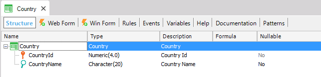
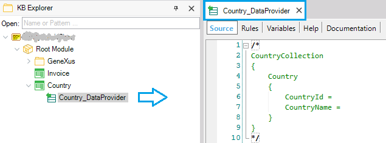
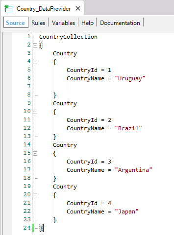

Since GeneXus 15, it is possible to easily define how to populate data automatically to physical tables associated with Transactions.
This saves you the task of manually having to load initial data to the tables.
By setting the following properties in a Transaction object:
you can take advantage of this feature.
For example, let's consider the Country Transaction:

If you set its Data Provider property =True, GeneXus creates a Data Provider named Country_DataProvider and initializes its source with the Transaction’s structure:

You may for example complete the Data Provider as shown below:

And if the property Used To = Populate Data, GeneXus understands that the objective of the Data Provider is to populate the Country physical table.
Used to property
Automatic data population associated with Transactions - FAQ
This feature is available as of GeneXus 15 Upgrade 1.